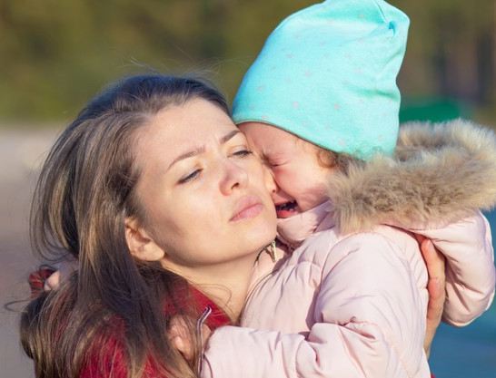

|  |
Types of Bullying
|
Bullying happens when someone hurts or scares another person on purpose and the person being bullied has a hard time defending themselves. So, everyone needs to get involved to help stop it. It is behaviour that makes the person being bullied feel afraid or uncomfortable. There are many ways that young people bully each other, even if they don’t realize it at the time. Some of these include:
In Canada, at least 1 in 3 adolescent students have reported being bullied. Almost half of Canada parents have reported having a child that is the victim of bullying. Studies have found bullying occurs once every seven minutes on the playground and once every 25 minutes in the classroom. In the majority of cases, bullying stops within 10 seconds when peers intervene, or do not support the bullying behaviour. That is why it’s important to stand up.
Myth #1 – “Children have got to learn to stand up for themselves.” Reality – Children who get up the courage to complain about being bullied are saying they’ve tried and can’t cope with the situation on their own. Treat their complaints as a call for help. In addition to offering support, it can be helpful to provide children with problem solving and assertiveness training to assist them in dealing with difficult situations.
Myth #2 – “Children should hit back – only harder.” Reality – This could cause serious harm. People who bully are often bigger and more powerful than their victims. This also gives children the idea that violence is a legitimate way to solve problems. Children learn how to bully by watching adults use their power for aggression. Adults have the opportunity to set a good example by teaching children how to solve problems by using their power in appropriate ways.
Myth #3 – “It builds character.” Reality – Children who are bullied repeatedly, have low self-esteem and do not trust others. Bullying damages a person’s self-concept.
Myth #4 – “Sticks and stones can break your bones but words can never hurt you.” Reality – Scars left by name-calling can last a lifetime.
Myth #5 – “That’s not bullying. They’re just teasing.” Reality – Vicious taunting hurts and should be stopped.
Myth #6 – “There have always been bullies and there always will be.” Reality – By working together as parents, teachers and students we have the power to change things and create a better future for our children. As a leading expert, Shelley Hymel, says, “It takes a whole nation to change a culture”. Let’s work together to change attitudes about bullying. After all, bullying is not a discipline issue – it is a teaching moment.
Myth #7 – “Kids will be kids.” Reality – Bullying is a learned behaviour. Children may be imitating aggressive behaviour they have seen on television, in movies or at home. Research shows that 93% of video games reward violent behaviour. Additional findings show that 25% of boys aged 12 to 17 regularly visit gore and hate internet sites, but that media literacy classes decreased the boys’ viewing of violence, as well as their acts of violence in the playground. It is important for adults to discuss violence in the media with youth, so they can learn how to keep it in context. There is a need to focus on changing attitudes toward violence.
(Source: Government of Alberta and BullyingCanada)